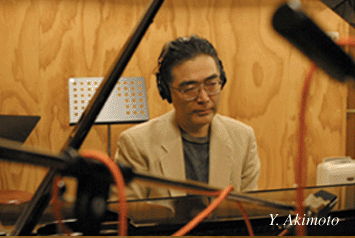
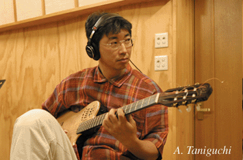
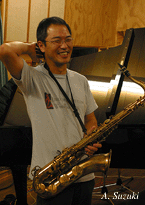
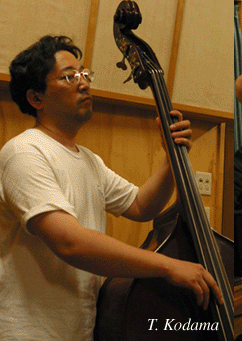
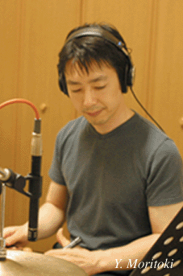
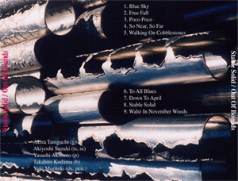

2004.01 発売 河内スタヂオ録音
Stable Solid
Out Of Bounds(秋田大学医学部ジャズ研OB会)秋元康志 (p) / 谷口章 (g) / 鈴木明義 (ts, ss) / 児玉隆仁 (b) / 守時由起 (ds)
About the Album
作品紹介
Stable Solid/Out Of Bounds
秋田大学医学部ジャズ研OB会
爽やかな薫風を秋田から
秋元康志 （ピアノ）
谷口 章 （ギタ－）
鈴木明義 （テナ－ソプラノサックス）
児玉隆仁 （ベ－ス）
守時由起 （ドラムス）
繊細はこちらまで
Out Of Bounds Recording ￥２，０００
（CD代、税込み）
Recording Report
レコーディングレポート
秋田大学医学部ジャズ研OB会
Stable Solid/Out Of Bounds
爽やかな薫風を秋田から
この音楽には独特の空気感、現代ジャズの息吹きがある。
全ての楽曲が映像的でリリ カルだ。――布川俊樹
早いもので、私どもが初めてのCDを出してから４年が過ぎた。この間、多くの方々から厳しくも温かい御批評、御声援を頂いた。心からお礼申し上げたい。
その後も各メンバ－は、金沢、埼玉、仙台、秋田等々で本業に励みつつも練習を重ね、また、オリジナル曲を編んでは年２回、ここ秋田は根城のTHE CAT WALKに集まってライブ演奏をし、曲を練り上げて来た。こうして漸くに機は熟し、ここに全曲オリジナルのCD 第２弾をお聴き頂くことになった。欣快至極である。
前回と異なる点として、
（１）全曲、オリジナルであること。収録９曲のうち、６曲が谷口章君、２曲が秋元康志君、１曲が鈴木明義氏の作。
（２）メンバ－はほぼ前回と同じ。ただし、ドラムスは全曲を新メンバ－の守時由起君が演じた。（今回は北島英樹君とTHE CAT WALKのオ－ナ－太田 徹氏の出演はなし。
序でながら、THE CAT WALKは秋田市中心部の大町に進出。新装成ったステ－ジの背後には、20余年来当店ライブ来演の著名本場ジャズメンによるサインやメッセ－ジで真っ黒になった例の壁面が、そっくりそのまま切り外されて移動し飾られているのは嬉しい。)
（３）収録はすべて河内スタジオ。――本邦第２の湖と謳われた八郎潟がオランダ人技師監督の下、干潟地として生まれ変わった大潟村の自宅スタジオで、精力的にプロのジャズ録音をされ、その技術は専門誌ステレオやスイングジャ－ナルで高い評価を得ている。
ところで当今、国の内外まことに穏やかならぬ世相。だが、それなら尚のこと、この一葉のCDから流れる私どものsoft jazzが一陣の爽風、薫風として、少しでも皆様方のお気持ちを和ませて頂くことが出来ればと、ここに些かの祈りをこめてお届け申しあげる次第。併せて今回も忌憚のない御感想御批評を下記OB会代表宛に是非にとお願い致したく。
2004年 1月
初代ジャズ研顧問 綿貫 勤（元秋田大学医学部長）
Profile

秋元康志 Yasushi Akimoto（ピアノ）
1957年東京都生まれ。高校時代まではビ－トルズを好む。秋田大学入学後、初めて聴いたジャズの魔力に取り付かれ、同好の士を集い、ジャズ研を結成。自らはピアニストとなり、演奏活動を開始。卒業後は秋田市内のTHE CAT WALKを本拠地としてライブ活動を行う。1982年秋田大医学部卒。小児科医から臨床を離れ、現在、生命保険会社医務室に勤務。ユ－モアに富む人柄でファン層は幅広い。埼玉県上尾市在住。

谷口 章 Akira Taniguchi（ギタ－）
1959年富山県生まれ。10歳よりクラシックギタ－を始める。高校時代はプログレッシブロックに傾倒。高校卒業後、ウエスモンゴメリ－に感銘を受け、ジャズに転向した。
秋田大学入学後、ピアノの秋元らとジャズ研を結成し、ライブ活動を行う。1984年秋田大学医学部卒。石川県金沢市に皮膚科形成外科クリニックを開業。近年は布川俊樹氏 に師事しつつ、金沢市で定期的にライブ活動を行う。多彩なオリジナル曲を持つ

鈴木明義 Akiyoshi Suzuki（テナ－ソプラノサックス）
1962年愛知県生まれ。大学時代にジャズ研に所属。テナ－の巨人ソニ－ロリンズに憧れ、独学でサックス奏法を習得した情熱家。太く良く歌うサウンドには定評がある。内外の有名ミュ－ジシャンとのセッションを通じ、その名はジャズ界に知られる。長年THE CAT WALKの店長を務め、明るく誠実な人柄で多くのファンに愛されている。秋田県内の介護老人保健施設で、新たな仕事のスタ－トを切った。秋田市在住。

児玉隆仁 Takahito Kodama（ベ－ス）
1963年秋田県生まれ。秋田大学入学とともにクラシックベ－スを始め、伊藤吉雄氏に師事。ジャズ研に入部後、有力メンバ－が卒業して存亡の危機に直面。部長として人望を集め、ジャズ研を復興させた努力家。卒業後もTHE CAT WALKでライブ経験を重ねて腕を上げた。1989年秋田大学医学部卒。秋田大学第三内科での研修後、秋田県昭和町の小玉医院に赴任し、老人医療、地域医療に力を注いでいる。秋田市在住。

守時由起 Yuki Moritoki（ドラムス）
1969年宮城県生まれ。中学時代からドラミングを学ぶ。神戸大学在学中は軽音ジャズに所属し、KOBE MUSSOC JAZZ ORCHESTRAやROCK BANDで活動。河瀬勝彦ドラムスク－ルでポリリズムドラミングの洗礼も受けた。秋田大学再入学後もジャズ研部長としてTHE CAT WALKを中心に活躍。最近、守 新治氏に師事しジャズの奥深さを感じている。1999年秋田大学医学部卒。現在、東北大学消化器内科肝臓グル－プに所属。
収録曲
1. ♪Blue Sky (Y. Akimoto) 7:05
2. Free Fall (A. Taniguchi) 8:38
3. ♪Poco Poco (A. Suzuki) 5:02
4. So Near, So Far (A. Taniguchi) 7:52
5. Walking On Cobblestones (A. Taniguchi) 7:50
6. To All Blues (A. Taniguchi) 4:50
7. Down To April (A. Taniguchi) 6:47
8. Stable Solid (Y. Akimoto) 8:45
9. Waltz In November Woods (A. Taniguchi) 8:06
Akira Taniguchi (g: 1-9) Akiyoshi Suzuki (ts: 3-6) (ss: 1,2,7-9) Yasushi Akimoto (p: 1-9) Takahito Kodama (b: 1-9) Yuki Moritoki (ds: 1-9) (perc: 2,5)
1. Blue Sky (Y. Akimoto)
秋元の息子さんがこの曲から青い空を連想したという、すがすがしい曲。息の合ったハ－モニ－はOut Of Boundsならでは。
2. Free Fall (A. Taniguchi)
谷口の音楽的センスが光るワルツ。広い空間をゆっくりと自由落下しているような曲調で、浮遊感を漂わせながらドライブするソロが展開される。
3. Poco Poco (A. Suzuki)
鈴木の人柄が伝わる彼の代表曲。親しみやすいメロディ－ラインとカリプソ調の爽やかなノリ。笑顔と元気をもらって、体が自然に動き出す。
4. So Near, So Far (A. Taniguchi)
谷口の美しいバラ－ド。近くてなお遠いという繊細で微妙な情感を、谷口のギタ－と鈴木のテナ－が交錯しながら優しく紡ぎ上げていく。
5. Walking On Cobblestones (A. Taniguchi)
谷口の粋なギターから浮かぶ情景。西欧の古い町並み、小雨上がりの濡れた石畳、差し込む柔らかい日差し、散策する人々、静かで時にぎやかな会話。
6. To All Blues (A. Taniguchi)
谷口がTHE CAT WALKのオ－ナ－、太田 徹氏に捧げたブル－ス。Toru BluesからTo All Bluesの曲名に。テ－マに太田氏得意のアフロリズムを交えた。
７. Down To April (A. Taniguchi)
北国秋田の４月。越冬した生物が動き出す。山の木々も芽吹き、風景はどんどん変化して５月を迎える。あっという間に過ぎ去った４月への想いを谷口が曲にした。
８. Stable Solid (Y. Akimoto)
日常の生活は不安定な要因に左右されている。それ故、確固として動じない世界を求め、秋元がモ-ドで表現。Out Of Boundsの強い絆を感じさせるタイトル曲。
９. Waltz In November Woods (A. Taniguchi)
第１弾ＣＤで好評を博した谷口の代表曲。雰囲気を変えて再収録した。晩秋の森、落ち葉でわずかに揺れる湖面を、鈴木の澄み切ったソプラノが渡っていく。
2004年 1月 （涌井秀樹）
メンバ－の御家族の皆様、御支援に感謝申し上げます。
